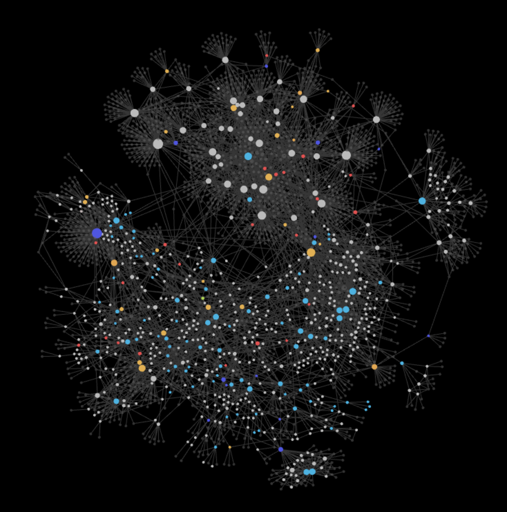
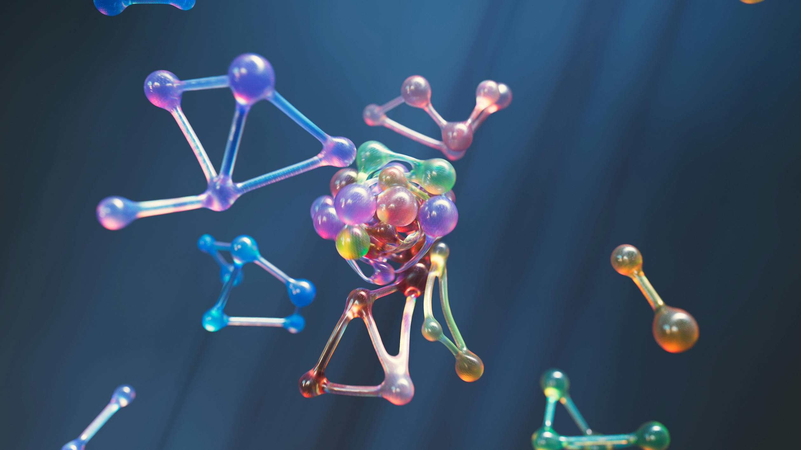
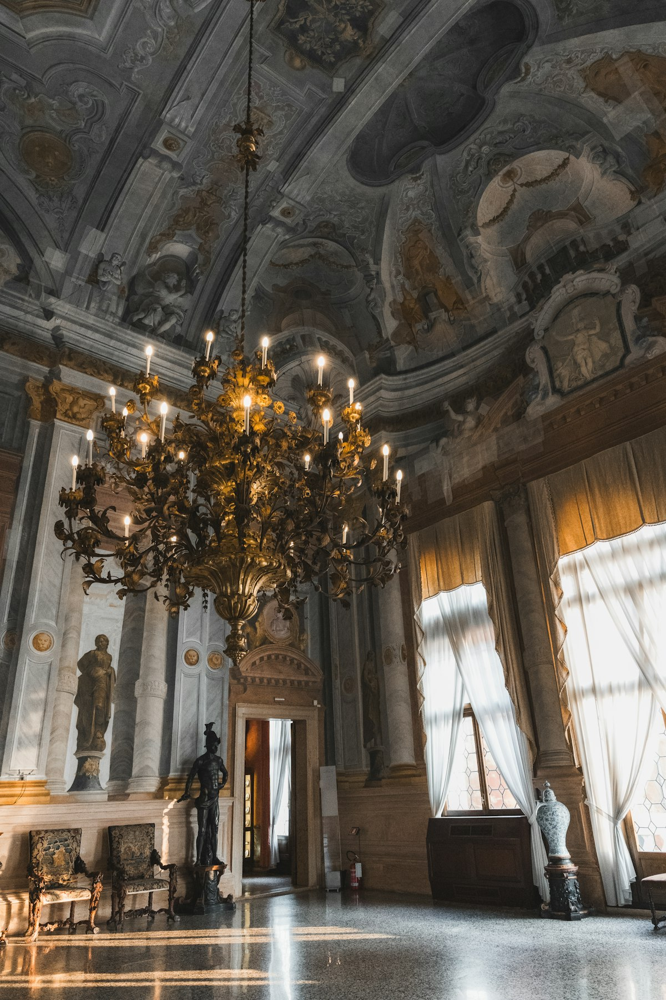
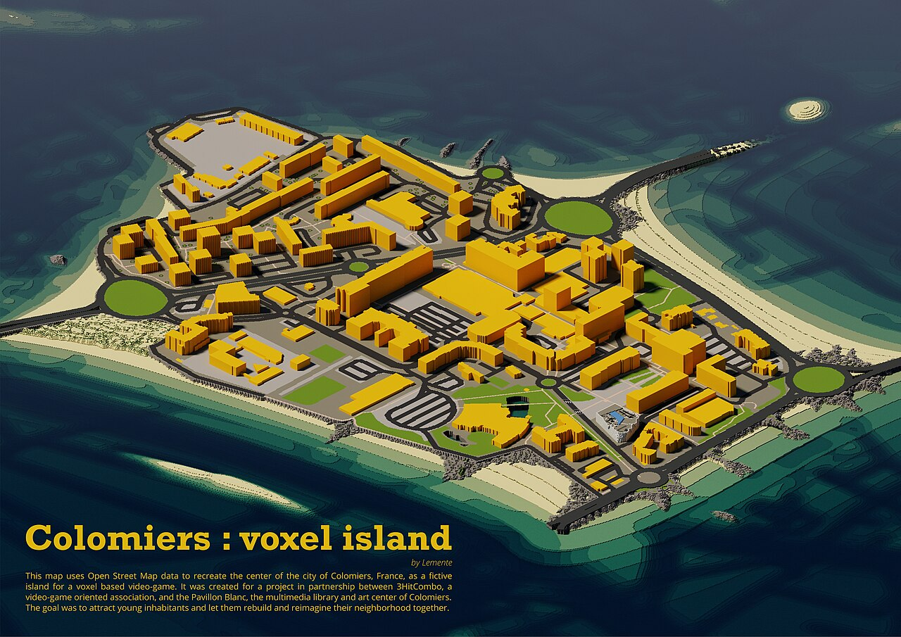

Students are building highly specialized, interlinked personal knowledge bases with tools like Obsidian, Notion, and Roam. LLMs are making these wikis come alive — but reading them is still passive. What if your wiki wasn't just searchable — but walkable?
Andrej Karpathy
"A large fraction of my recent token throughput is going less into manipulating code, and more into manipulating knowledge."
April 2026 · His LLM wiki grew to 100+ articles & 400,000 words — without him writing a single word
"Obsidian is the IDE; the LLM is the programmer; the wiki is the codebase."
The rise of personal knowledge
Obsidian, Notion, Roam Research
Students are building interconnected knowledge graphs with wikilinks, tags, and backlinks — creating personal wikis that mirror how their brain connects ideas
LLMs make wikis intelligent
AI can now query, summarize, and surface connections across thousands of notes — but the interface is still text on a screen
The missing dimension: space
You can search your wiki. You can chat with your wiki. But you can't walk through your wiki — until now.
PERSONAL KNOWLEDGE BASES ARE EXPLODING
Millions
of knowledge workers use Obsidian
A new generation is building second brains — interlinked markdown files that form personal encyclopedias
LLMs
turn static notes into living knowledge
But even with AI, the experience is still reading — scrolling through text, clicking links, staring at screens
THE QUESTION —Your notes are already a knowledge graph. Your brain already has a built-in GPS. What if your wiki wasn't just searchable — but walkable?
03 / 11InsightMethod of Loci
I scored 96% in chemistry. It was my weakest subject.
I didn't get smarter. I got spatial. The Method of Loci turned my worst subject into my best result — and that experience is why Loci exists.
Founder's Story
In high school, chemistry was my worst subject. I was failing. Then I discovered the Method of Loci — I placed every reaction, every formula, every concept in rooms of a mental palace. I walked through it before every exam. I scored 96%. The knowledge didn't change. The encoding changed.
Retention by study method
Re-reading notes
10-20%
Flashcards / Anki
30-40%
Lecture recordings
15-25%
Method of Loci
~90%
THE SCIENCE —Visual learners represent 65% of the population (Fleming's VARK model). The Method of Loci has been used for 2,500+ years — from Greek orators to modern memory champions. Spatial memory is dramatically more powerful than rote memorization.
The Technique
2,500+
years of proven use
The Method of Loci — placing ideas in imagined spaces — is the oldest and most effective memory technique known to humanity. Greek orators used it. Memory champions still do.
65%
of people are visual learners
Fleming's VARK model shows the majority of students learn best through spatial and visual encoding — not text. Yet almost every study tool is text-based.
SOURCE: FLEMING & MILLS, 1992
~90%
retention with spatial encoding
Participants trained in Method of Loci showed dramatically higher recall than control groups — the technique works because it maps to how the brain naturally encodes memory.
SOURCE: DRESLER ET AL. 2017, NEURON
04 / 11ProblemThe Knowledge Gap
Medical students take 10,000 pages of notes. They remember a fraction.
Obsidian has exploded in memory-intensive fields — medicine, law, STEM. Students build beautiful interlinked knowledge graphs. But the graph is 2D, flat, and passive. You READ it. You don't EXPERIENCE it.

OBSIDIAN GRAPH VIEW — BEAUTIFUL BUT FLAT
2D only
Why Obsidian is everywhere
Interlinked markdown notes
Wikilinks, backlinks, and tags create a knowledge graph naturally — every note connected to related concepts
Massive in medical & STEM education
Medical students use Obsidian to organize anatomy, pharmacology, pathology — thousands of interconnected notes per course
But the graph is passive
You stare at dots and lines. You click through links. The knowledge graph is a map — but you can't walk through it.
The Scale
Millions
of Obsidian users worldwide
Especially popular in medical schools, law schools, and STEM programs — anywhere that demands massive knowledge retention
10,000+
pages of notes per medical student
Four years of dense, interconnected knowledge — pharmacology, anatomy, pathology, clinical reasoning — all in markdown
Fraction
retained through passive review
Re-reading notes has 10-20% retention. Students build incredible knowledge bases — then forget most of what's in them.
THE GAP —Obsidian creates the knowledge graph. LLMs make it intelligent. But the interface is still flat text on a screen. The brain doesn't want to read a graph — it wants to walk through one.
05 / 11ScienceThe Repetition Trap
10,000 repetitions of reading. Or 10 walks through a map.
Our brains evolved for spatial navigation, not text processing. Our ancestors needed mental maps to survive — finding food, water, shelter, avoiding predators. Your hippocampus doesn't care about flashcards. It cares about WHERE things are.
Evolutionary Advantage
The brain has a built-in GPS
Our ancestors needed mental maps to survive — finding food sources, water, shelter, and avoiding predators. This is why spatial memory is the most powerful encoding system the brain has.
Nobel Prize 2014
Nobel
Place cells + Grid cells
O'Keefe & Moser won the 2014 Nobel Prize in Medicine for discovering the brain's inner GPS — place cells and grid cells that encode location as memory. Your hippocampus is literally a spatial computer.
O'KEEFE & MOSER, NOBEL PRIZE IN PHYSIOLOGY OR MEDICINE, 2014
The Counter-Strike Effect
Gamers remember every corner of every map
A gamer can navigate every corner of Dust 2 after a few hours of play — but can't recall what they studied for weeks. Same brain. Different encoding. That's the power of spatial memory.
THE INSIGHT —Your hippocampus doesn't care about flashcards. It cares about WHERE things are. Gamers remember every corner of every Counter-Strike map after a few hours — but can't recall what they studied for weeks. Same brain. Different encoding.
Hippocampus
Place cells + Grid cells = spatial memory encoding

TRIPLE ENCODING — SPATIAL + VISUAL + SEMANTIC
KNOWLEDGE GRAPH TO 3D SPATIAL MEMORY
10-20%
retention from re-reading
The most common study method is also the least effective. Students re-read notes endlessly — and forget almost everything.
~90%
retention from spatial encoding
The Method of Loci activates the hippocampus — the brain's spatial navigation and memory formation centre. The same system that remembers game maps can remember cell biology.
06 / 11GapThe Map Problem
The problem isn't the method. It's the maps.
Method of Loci works brilliantly — but you need a spatial environment to walk through. Memory champions spend YEARS building mental palaces room by room. What if AI could generate an infinite number of unique maps — one for every set of notes?
The Bottleneck
You need a spatial environment to walk through
The Method of Loci requires a vivid mental palace — a building, a route, a world with distinct locations. Most students don't have one. Most never will.
The Founder's Hack
I used Counter-Strike maps
I knew every corner of Dust 2, Inferno, Mirage. So I placed chemistry concepts in those maps. It worked brilliantly — but there are only ~10 maps I know well enough to use.
The Champions' Problem
Memory champions spend YEARS building palaces
World memory champions construct elaborate mental architectures room by room, space by space. It takes years of practice. The technique is ancient and proven — but the tooling doesn't exist.
THE GAP —The science is proven. The technique is 2,500 years old. But building a mind palace is the hardest part. What if AI could generate an infinite number of unique maps — one for every set of notes you have?
~10 maps you know
Counter-Strike · Limited · Shared
→
Infinite AI-generated maps
Loci · Unique · Personal
~10
maps a gamer knows well enough
You can only use the Method of Loci in spaces you know intimately. Most people know a handful of buildings and game maps. That's it.
∞
maps AI can generate
Every set of notes gets its own unique, procedurally generated world — tailored to the knowledge graph, themed to your preference, ready in under 60 seconds.
"What if AI could generate an infinite number of unique maps — one for every set of notes you'll ever take?"
07 / 11SolutionMeet Loci
Select your notes. Pick a world. Walk through your knowledge.
An Obsidian plugin that transforms your notes into explorable 3D mind palaces. Related concepts in adjacent rooms. Important concepts get bigger spaces. NPC guides powered by LLMs. AI-generated 3D artifacts for every concept.
CSIRO Challenge Statement
"How might we create an immersive and interactive AI-driven learning experience where students create and interact with their own 3D worlds, fostering creativity, artistic expression, and imagination?"
The 4-step pipeline
01
Select your notes
Choose Obsidian notes on any topic — cell biology, organic chemistry, world history — or type a topic directly
↓
02
AI extracts knowledge graph
LLM parses your notes into concepts, relationships, and hierarchy — building the blueprint for your palace
↓
03
Procedural 3D world generates
Related concepts become adjacent rooms. Important concepts get bigger spaces. AI generates 3D artifacts and NPC guides.
↓
04
Explore your mind palace
Walk through with WASD controls. Discover artifacts. Talk to NPC guides grounded in your source notes. Remember forever.
Obsidian Plugin
Your notes, your world
Select notes in Obsidian, click "Open in Palace" — your knowledge graph becomes a walkable 3D environment in under 60 seconds
NPC Guides
LLM-powered tutors in every room
AI characters grounded in your source notes — they explain, quiz, and push deeper understanding at every turn
3D Artifacts
AI-generated concept objects
A spinning DNA helix, a rotating benzene ring, a 3D cell membrane — abstract ideas made visible and tangible
Spatial Layout
Knowledge graph becomes architecture
Related concepts in adjacent rooms. Important concepts get bigger spaces. The world mirrors how your knowledge connects.
08 / 11ExperienceThemed Worlds
Six immersive themes. Same knowledge, different worlds.
Each theme transforms the entire environment — textures, lighting, particles, NPC style, ambient atmosphere. Choose the world that matches your study vibe.
Nature / Garden
Minecraft-style terrain with trees, grass, rivers, and stone paths. Concepts grow like natural formations.
Urban rooftops, neon-lit alleyways, concrete plazas. Knowledge mapped to city districts.

Ancient Library
Grand halls, floor-to-ceiling bookshelves, candlelit chambers. Scholarly atmosphere.
Space Station
Metallic corridors, starfield windows, holographic displays. Concepts as floating holograms.
Ocean Depths
Underwater temples, coral formations, bioluminescent paths. Knowledge drifts through currents.
09 / 11DemoSee It Live
From biology notes to explorable world.
12 notes. 28 concepts. 1 walkable palace. The Nucleus Room is the largest space (most connected concept). Professor Helix is the NPC guide. The DNA Double Helix is the 3D artifact.
Input
12
Obsidian notes on cell biology
Markdown files with wikilinks, covering organelles, processes, and cellular structure
Knowledge Graph
28
concepts extracted
AI parses notes into concepts and relationships — nucleus, mitochondria, ATP, DNA, ribosomes, and more
Output
1
walkable mind palace
Every concept is a room. Every relationship is a corridor. Every idea has a 3D artifact and an NPC guide.
The Nucleus Room
The largest room — most connected concept, central hub from which all cellular processes radiate
largest space
Guide: Professor Helix
"The nucleus contains all the cell's genetic instructions. Can you explain why DNA replication must happen before mitosis?"
NPC guide
3D Artifact: DNA Double Helix
A rotating voxel DNA strand on a pedestal — interact to explore base pairing and replication
AI-generated

NUCLEUS ROOM — LARGEST SPACE
PROFESSOR HELIX — NPC GUIDE
DNA DOUBLE HELIX — 3D ARTIFACT
GENERATED FROM 12 CELL BIOLOGY NOTES
LIVE DEMO AVAILABLE · ASK US TO SHOW YOU
10 / 11TeamWho We Are
Built by a team that believes learning should feel like play.
We are students, developers, and designers united by a shared mission: make knowledge unforgettable.
P
[Team Member 1]
Full-Stack Dev
A
[Team Member 2]
3D / Frontend
M
[Team Member 3]
AI / Backend
S
[Team Member 4]
Design / UX
11 / 11VisionThe Future
Stop reading your notes. Start walking through them.
Every student has notes. Few remember them. Loci turns knowledge into worlds you walk through.
Step 1
Your notes
the knowledge you already have
Obsidian, markdown, wikilinks — the knowledge graph you've already been building. Loci doesn't replace your workflow. It extends it into a third dimension.
Step 2
Your world
AI builds the palace for you
No more spending years building mental palaces room by room. AI generates an infinite number of unique worlds — one for every set of notes you have.
Step 3
Your memory
spatial encoding does the rest
Walk through rooms. Talk to NPC guides. Discover 3D artifacts. Your hippocampus encodes location as memory — the same system that remembers every game map you've ever played.
L
Loci
Mind Palace Generator · CSIRO Hackathon 2026
Every student has notes. Few remember them.
Loci turns knowledge into worlds you walk through. Your notes. Your world. Your memory.
THANK YOU · LIVE DEMO AVAILABLE · YOUR NOTES · YOUR WORLD · YOUR MEMORY